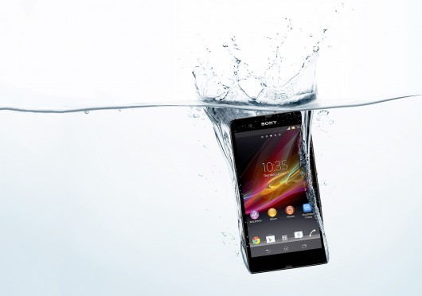

Galaxy S4

The Samsung Galaxy S4 has finally been unveiled in New York ending months of speculation, leaks and Photoshopped images. And a decent chunk of those rumours, especially the ones which popped up over the last few days, have turned out to be pretty much on the money.
The Galaxy S4 arrives with a truly ridiculous 1.6GHz octo-core (that's eight people, EIGHT!) processor, 2GB of RAM, 5-inch full HD display (441ppi), 13MP rear camera, 2MP front camera, NFC, 4G and a 2,600mAh battery.
Android Jelly Bean 4.2.1 is the software on board the Galaxy SIV, with Samsung's TouchWiz user interface having been given a spruce up before being slapped on top.
Xperia Z
The Xperia Z sports a 5-inch, 1920 x 1080 display. That places it alongside the Droid DNA and Huawei Ascend D2 with an absurd 441 pixels per inch (PPI).
Powering the handset is Qualcomm's quad core Snapdragon S4 Pro chip. The device's rear camera takes 13 MP pictures, and shoots high dynamic range (HDR) video. Sony packed it all into a slim body, measuring a mere 7.9 mm thick.
Sony is marketing the device's water resistance. No smartphone today is completely water-proof, but Sony says the Xperia Z provides the highest levels of water-proofing (IP55 and IP57) among high-end handsets.